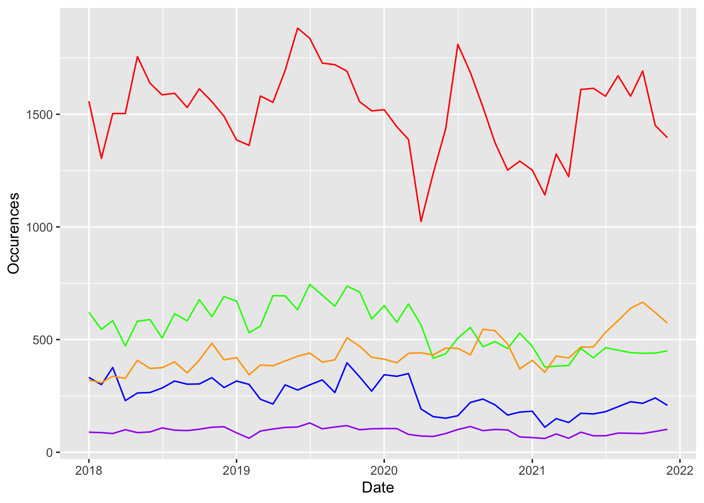

My title
My subtitle if needed
Abstract
First sentence. Second sentence. Third sentence. Fourth sentence.
Introduction
The introduction should be two or three paragraphs of content. And there should be an additional final paragraph that sets out the remainder of the paper.
Data

See Table @ref{tab:byyear}
| 2018 | 2019 | 2020 | 2021 | |
|---|---|---|---|---|
| January | 2920 | 2879 | 3033 | 2377 |
| February | 2545 | 2599 | 2861 | 2047 |
| March | 2883 | 2857 | 2913 | 2363 |
| April | 2632 | 2949 | 2294 | 2220 |
| May | 3095 | 3202 | 2314 | 2800 |
| June | 2954 | 3328 | 2569 | 2744 |
| July | 2861 | 3451 | 3040 | 2829 |
| August | 3023 | 3249 | 3006 | 2995 |
| September | 2863 | 3155 | 2878 | 2969 |
| October | 3104 | 3451 | 2714 | 3097 |
| November | 3083 | 3174 | 2457 | 2843 |
| December | 2992 | 2902 | 2437 | 2729 |

References
R Core Team. 2020. R: A Language and Environment for Statistical Computing. Vienna, Austria: R Foundation for Statistical Computing. https://www.R-project.org/.